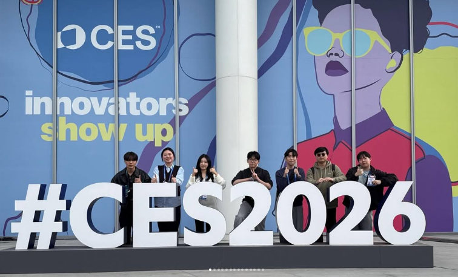
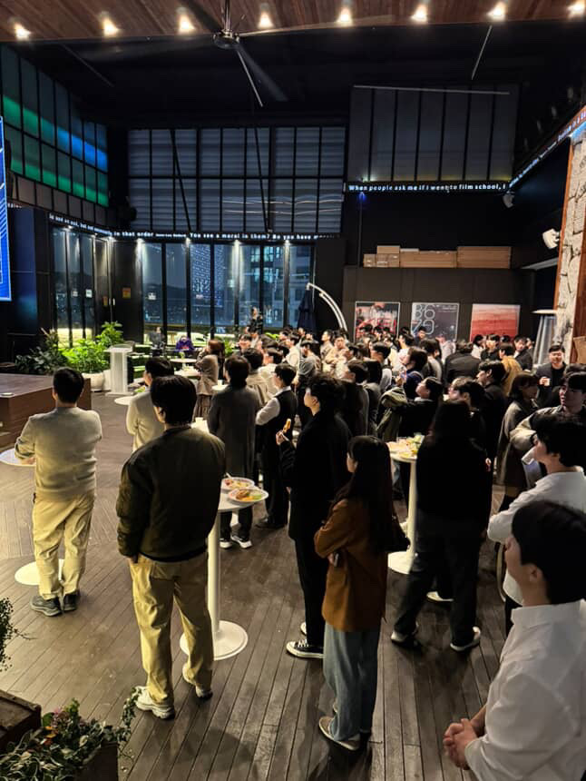
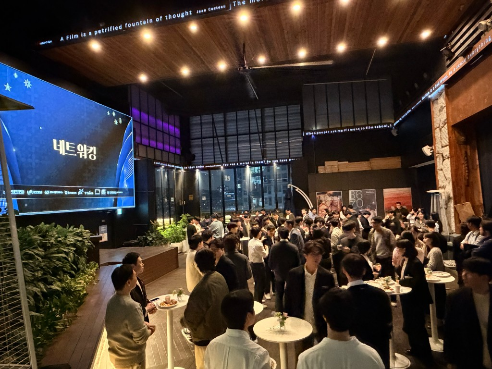

Operating Model
강의보다 중요한 것은 매주 검증되는 성장입니다
Techeer 프로그램은 단순 수강형 과정이 아니라, 프로젝트 산출물과 피드백 루프를 중심으로 설계된 성장 시스템입니다. 참가자는 팀 단위로 문제를 정의하고, 구현하고, 발표하면서 개발자로 일하는 방식을 익힙니다.
Curriculum
핵심 프로그램
부트캠프, 프로젝트, 커리어 준비가 따로 움직이지 않도록 하나의 흐름으로 연결했습니다.
01
SW 부트캠프
매년 2회 운영되는 5주 집중 온라인 과정입니다. 개발 기본기, 협업 방식, 프로젝트 실행력을 짧은 기간에 끌어올립니다.
- 온라인 집중 운영
- 주차별 프로젝트 마일스톤
- 멘토 피드백 기반 개선
02
팀 프로젝트
프론트엔드, 백엔드, 인프라 역할을 나누어 실제 서비스에 가까운 결과물을 만듭니다.
- 기획부터 배포까지 경험
- GitHub 협업과 코드 리뷰
- 포트폴리오 결과물 완성
03
해커톤
짧은 시간 안에 아이디어를 검증하고 구현하는 집중 개발 이벤트입니다. 문제 정의와 실행 속도를 훈련합니다.
- 아이디어 검증
- 프로토타입 구현
- 데모와 발표
04
커리어 클리닉
코딩테스트, 이력서, 기술 면접을 실전 기준으로 점검합니다. 프로젝트 경험이 채용 언어로 전달되도록 정리합니다.
- 이력서 구조화
- 기술 면접 준비
- 코딩테스트 루틴
05
실리콘밸리 한 달 살기
현지 기업 탐방과 엔지니어 네트워킹을 통해 글로벌 커리어 관점과 개발 문화의 기준을 경험합니다.
- 현지 네트워킹
- 기업 탐방
- 글로벌 커리어 관점
06
기술 세션 & 커뮤니티
현업 기술과 커리어 주제를 지속적으로 공유합니다. 부트캠프 이후에도 동료와 멘토의 학습 네트워크가 이어집니다.
- 기술 발표
- 스터디 운영
- 선배 멘토 네트워크
Silicon Valley & Party
실리콘밸리에서 배우고, 테커 파티에서 성장을 공유합니다
테커는 부트캠프 이후에도 현지 기업 탐방, 엔지니어 네트워킹, CES·Apple·Google 등 글로벌 개발 문화 경험으로 시야를 넓힙니다. 테커 파티에서는 멘토와 멤버가 모여 프로젝트 성과와 다음 성장을 나눕니다.
Silicon Valley현지 기업 탐방과 엔지니어 네트워킹으로 글로벌 커리어 기준을 경험합니다.
Techeer Party성과 발표와 네트워킹을 통해 커뮤니티 안에서 다음 기회를 만듭니다.




Bootcamp Experience
참가자는 매주 결과물을 남깁니다
프로그램은 학습량보다 실행 밀도를 중요하게 봅니다. 매주 팀의 결과물을 만들고, 리뷰하고, 발표하면서 자신이 어디까지 성장했는지 확인합니다.
Build실제 서비스를 목표로 기능을 구현합니다.
Review멘토와 동료 피드백으로 코드와 의사결정을 개선합니다.
Present개발 과정을 설명하고 결과물을 설득력 있게 발표합니다.